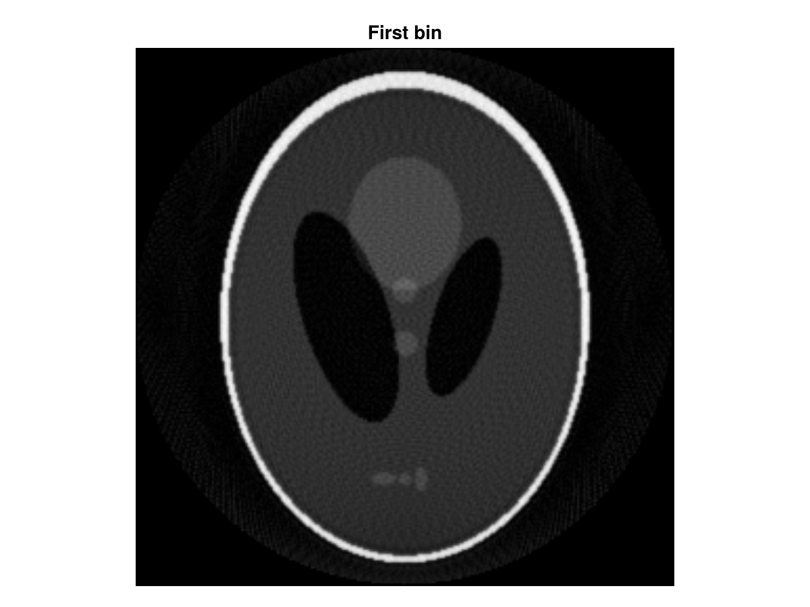
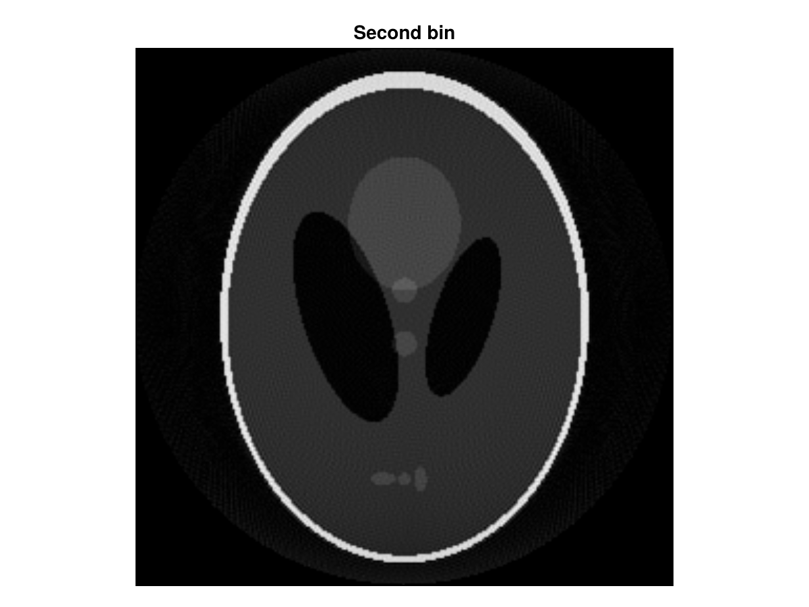

Bin Profiles into Contrasts
Description
This example described how to perform data binning with different number of profiles which is generaly used for self-gating acquisition in order to reconstruct images along the cardiac/respiratory cycle :
- Trotier AJ, Castets CR, Lefrançois W, et al. USPIO-enhanced 3D-cine self-gated cardiac MRI based on a stack-of-stars golden angle short echo time sequence: Application on mice with acute myocardial infarction. Journal of Magnetic Resonance Imaging 2016;44:355–365 doi: 10.1002/jmri.25150.
- Ribot EJ, Duriez TJ, Trotier AJ, Thiaudiere E, Franconi J-M, Miraux S. Self-gated bSSFP sequences to detect iron-labeled cancer cells and/or metastases in vivo in mouse liver at 7 Tesla. Journal of Magnetic Resonance Imaging 2015;41:1413–1421 doi: 10.1002/jmri.24688.
Here, we will create a simulated 2D radial acquisition and split the projections in 2 parts along the contrast dimension. The number of projection into each bin will be different to show how MRIReco handle that case.
Setup
using CairoMakie
using ImageUtils: shepp_logan
using MRIReco, MRISimulation
function plot_im2D(im2D;title::String="")
f = Figure()
ax = Axis(f[1, 1],aspect = DataAspect(), yreversed = true, title = title)
image!(ax, im2D')
hidedecorations!(ax, grid = false)
f
endplot_im2D (generic function with 1 method)Simulate a radial acquisition
N = 256
x = shepp_logan(N)
params = Dict{Symbol, Any}()
params[:simulation] = "fast"
params[:trajName] = "Radial"
params[:numProfiles] = round(Int64,400)
params[:numSamplingPerProfile] = round(Int64,N)
acqRad = simulation(x, params)
rawRad = RawAcquisitionData(acqRad)RawAcquisitionData(Dict{String, Any}("encodedFOV" => [0.0, 0.0, 0.0], "receiverChannels" => 1, "encodedSize" => [256, 256], "H1resonanceFrequency_Hz" => 1, "trajectory" => "Radial"), Profile[Profile(AcquisitionHeader(0x0000, 0x0000000000000000, 0x00000000, 0x00000001, 0x00000000, (0x00000000, 0x00000000, 0x00000000), 0x0100, 0x0001, 0x0001, (0x0000000000000000, 0x0000000000000000, 0x0000000000000000, 0x0000000000000000, 0x0000000000000000, 0x0000000000000000, 0x0000000000000000, 0x0000000000000000, 0x0000000000000000, 0x0000000000000000, 0x0000000000000000, 0x0000000000000000, 0x0000000000000000, 0x0000000000000000, 0x0000000000000000, 0x0000000000000000), 0x0000, 0x0000, 0x0000, 0x0000, 0x0002, 3.90625f0, (0.0f0, 0.0f0, 0.0f0), (1.0f0, 0.0f0, 0.0f0), (0.0f0, 1.0f0, 0.0f0), (0.0f0, 0.0f0, 1.0f0), (0.0f0, 0.0f0, 0.0f0), EncodingCounters(0x0000, 0x0000, 0x0000, 0x0000, 0x0000, 0x0000, 0x0000, 0x0000, 0x0000, (0x0000, 0x0000, 0x0000, 0x0000, 0x0000, 0x0000, 0x0000, 0x0000)), (0, 0, 0, 0, 0, 0, 0, 0), (0.0f0, 0.0f0, 0.0f0, 0.0f0, 0.0f0, 0.0f0, 0.0f0, 0.0f0)), Float32[0.5 0.49609375 … -0.4921875 -0.49609375; 0.0 0.0 … -0.0 -0.0], ComplexF32[14.993826f0 - 0.0139813805f0im; -2.7452886f0 - 17.48704f0im; … ; -1.7354164f0 + 1.6825206f0im; -2.7449248f0 + 17.487167f0im;;]), Profile(AcquisitionHeader(0x0000, 0x0000000000000000, 0x00000000, 0x00000002, 0x00000000, (0x00000000, 0x00000000, 0x00000000), 0x0100, 0x0001, 0x0001, (0x0000000000000000, 0x0000000000000000, 0x0000000000000000, 0x0000000000000000, 0x0000000000000000, 0x0000000000000000, 0x0000000000000000, 0x0000000000000000, 0x0000000000000000, 0x0000000000000000, 0x0000000000000000, 0x0000000000000000, 0x0000000000000000, 0x0000000000000000, 0x0000000000000000, 0x0000000000000000), 0x0000, 0x0000, 0x0000, 0x0000, 0x0002, 3.90625f0, (0.0f0, 0.0f0, 0.0f0), (1.0f0, 0.0f0, 0.0f0), (0.0f0, 1.0f0, 0.0f0), (0.0f0, 0.0f0, 1.0f0), (0.0f0, 0.0f0, 0.0f0), EncodingCounters(0x0001, 0x0000, 0x0000, 0x0000, 0x0000, 0x0000, 0x0000, 0x0000, 0x0000, (0x0000, 0x0000, 0x0000, 0x0000, 0x0000, 0x0000, 0x0000, 0x0000)), (0, 0, 0, 0, 0, 0, 0, 0), (0.0f0, 0.0f0, 0.0f0, 0.0f0, 0.0f0, 0.0f0, 0.0f0, 0.0f0)), Float32[-0.4999846 -0.49607846 … 0.49217233 0.49607846; -0.0039269505 -0.003896271 … 0.003865592 0.003896271], ComplexF32[5.082228f0 - 0.4603884f0im; -7.301489f0 - 3.8707426f0im; … ; 4.533327f0 - 5.7849593f0im; -7.301489f0 + 3.8707426f0im;;]), Profile(AcquisitionHeader(0x0000, 0x0000000000000000, 0x00000000, 0x00000003, 0x00000000, (0x00000000, 0x00000000, 0x00000000), 0x0100, 0x0001, 0x0001, (0x0000000000000000, 0x0000000000000000, 0x0000000000000000, 0x0000000000000000, 0x0000000000000000, 0x0000000000000000, 0x0000000000000000, 0x0000000000000000, 0x0000000000000000, 0x0000000000000000, 0x0000000000000000, 0x0000000000000000, 0x0000000000000000, 0x0000000000000000, 0x0000000000000000, 0x0000000000000000), 0x0000, 0x0000, 0x0000, 0x0000, 0x0002, 3.90625f0, (0.0f0, 0.0f0, 0.0f0), (1.0f0, 0.0f0, 0.0f0), (0.0f0, 1.0f0, 0.0f0), (0.0f0, 0.0f0, 1.0f0), (0.0f0, 0.0f0, 0.0f0), EncodingCounters(0x0002, 0x0000, 0x0000, 0x0000, 0x0000, 0x0000, 0x0000, 0x0000, 0x0000, (0x0000, 0x0000, 0x0000, 0x0000, 0x0000, 0x0000, 0x0000, 0x0000)), (0, 0, 0, 0, 0, 0, 0, 0), (0.0f0, 0.0f0, 0.0f0, 0.0f0, 0.0f0, 0.0f0, 0.0f0, 0.0f0)), Float32[0.4999383 0.49603254 … -0.4921268 -0.49603254; 0.007853659 0.007792302 … -0.007730945 -0.007792302], ComplexF32[2.9615686f0 + 1.6432602f0im; -9.0646715f0 + 19.113905f0im; … ; 8.2973795f0 + 6.759422f0im; -9.0646715f0 - 19.113905f0im;;]), Profile(AcquisitionHeader(0x0000, 0x0000000000000000, 0x00000000, 0x00000004, 0x00000000, (0x00000000, 0x00000000, 0x00000000), 0x0100, 0x0001, 0x0001, (0x0000000000000000, 0x0000000000000000, 0x0000000000000000, 0x0000000000000000, 0x0000000000000000, 0x0000000000000000, 0x0000000000000000, 0x0000000000000000, 0x0000000000000000, 0x0000000000000000, 0x0000000000000000, 0x0000000000000000, 0x0000000000000000, 0x0000000000000000, 0x0000000000000000, 0x0000000000000000), 0x0000, 0x0000, 0x0000, 0x0000, 0x0002, 3.90625f0, (0.0f0, 0.0f0, 0.0f0), (1.0f0, 0.0f0, 0.0f0), (0.0f0, 1.0f0, 0.0f0), (0.0f0, 0.0f0, 1.0f0), (0.0f0, 0.0f0, 0.0f0), EncodingCounters(0x0003, 0x0000, 0x0000, 0x0000, 0x0000, 0x0000, 0x0000, 0x0000, 0x0000, (0x0000, 0x0000, 0x0000, 0x0000, 0x0000, 0x0000, 0x0000, 0x0000)), (0, 0, 0, 0, 0, 0, 0, 0), (0.0f0, 0.0f0, 0.0f0, 0.0f0, 0.0f0, 0.0f0, 0.0f0, 0.0f0)), Float32[-0.4998612 -0.49595606 … 0.4920509 0.49595606; -0.011779882 -0.011687852 … 0.011595822 0.011687852], ComplexF32[16.566465f0 - 2.3467724f0im; -2.973968f0 + 6.258399f0im; … ; 0.7450635f0 + 0.2906755f0im; -2.973968f0 - 6.258399f0im;;]), Profile(AcquisitionHeader(0x0000, 0x0000000000000000, 0x00000000, 0x00000005, 0x00000000, (0x00000000, 0x00000000, 0x00000000), 0x0100, 0x0001, 0x0001, (0x0000000000000000, 0x0000000000000000, 0x0000000000000000, 0x0000000000000000, 0x0000000000000000, 0x0000000000000000, 0x0000000000000000, 0x0000000000000000, 0x0000000000000000, 0x0000000000000000, 0x0000000000000000, 0x0000000000000000, 0x0000000000000000, 0x0000000000000000, 0x0000000000000000, 0x0000000000000000), 0x0000, 0x0000, 0x0000, 0x0000, 0x0002, 3.90625f0, (0.0f0, 0.0f0, 0.0f0), (1.0f0, 0.0f0, 0.0f0), (0.0f0, 1.0f0, 0.0f0), (0.0f0, 0.0f0, 1.0f0), (0.0f0, 0.0f0, 0.0f0), EncodingCounters(0x0004, 0x0000, 0x0000, 0x0000, 0x0000, 0x0000, 0x0000, 0x0000, 0x0000, (0x0000, 0x0000, 0x0000, 0x0000, 0x0000, 0x0000, 0x0000, 0x0000)), (0, 0, 0, 0, 0, 0, 0, 0), (0.0f0, 0.0f0, 0.0f0, 0.0f0, 0.0f0, 0.0f0, 0.0f0, 0.0f0)), Float32[0.49975327 0.49584895 … -0.49194464 -0.49584895; 0.015705379 0.015582682 … -0.015459983 -0.015582682], ComplexF32[9.999954f0 + 2.6347947f0im; -4.0887914f0 - 13.689772f0im; … ; 0.23608647f0 - 1.4288557f0im; -4.0887914f0 + 13.689772f0im;;]), Profile(AcquisitionHeader(0x0000, 0x0000000000000000, 0x00000000, 0x00000006, 0x00000000, (0x00000000, 0x00000000, 0x00000000), 0x0100, 0x0001, 0x0001, (0x0000000000000000, 0x0000000000000000, 0x0000000000000000, 0x0000000000000000, 0x0000000000000000, 0x0000000000000000, 0x0000000000000000, 0x0000000000000000, 0x0000000000000000, 0x0000000000000000, 0x0000000000000000, 0x0000000000000000, 0x0000000000000000, 0x0000000000000000, 0x0000000000000000, 0x0000000000000000), 0x0000, 0x0000, 0x0000, 0x0000, 0x0002, 3.90625f0, (0.0f0, 0.0f0, 0.0f0), (1.0f0, 0.0f0, 0.0f0), (0.0f0, 1.0f0, 0.0f0), (0.0f0, 0.0f0, 1.0f0), (0.0f0, 0.0f0, 0.0f0), EncodingCounters(0x0005, 0x0000, 0x0000, 0x0000, 0x0000, 0x0000, 0x0000, 0x0000, 0x0000, (0x0000, 0x0000, 0x0000, 0x0000, 0x0000, 0x0000, 0x0000, 0x0000)), (0, 0, 0, 0, 0, 0, 0, 0), (0.0f0, 0.0f0, 0.0f0, 0.0f0, 0.0f0, 0.0f0, 0.0f0, 0.0f0)), Float32[-0.4996145 -0.49571127 … 0.49180803 0.49571127; -0.019629909 -0.01947655 … 0.01932319 0.01947655], ComplexF32[-3.4124522f0 - 6.996779f0im; -8.00127f0 - 12.458056f0im; … ; 8.934533f0 - 3.6784647f0im; -8.00127f0 + 12.458056f0im;;]), Profile(AcquisitionHeader(0x0000, 0x0000000000000000, 0x00000000, 0x00000007, 0x00000000, (0x00000000, 0x00000000, 0x00000000), 0x0100, 0x0001, 0x0001, (0x0000000000000000, 0x0000000000000000, 0x0000000000000000, 0x0000000000000000, 0x0000000000000000, 0x0000000000000000, 0x0000000000000000, 0x0000000000000000, 0x0000000000000000, 0x0000000000000000, 0x0000000000000000, 0x0000000000000000, 0x0000000000000000, 0x0000000000000000, 0x0000000000000000, 0x0000000000000000), 0x0000, 0x0000, 0x0000, 0x0000, 0x0002, 3.90625f0, (0.0f0, 0.0f0, 0.0f0), (1.0f0, 0.0f0, 0.0f0), (0.0f0, 1.0f0, 0.0f0), (0.0f0, 0.0f0, 1.0f0), (0.0f0, 0.0f0, 0.0f0), EncodingCounters(0x0006, 0x0000, 0x0000, 0x0000, 0x0000, 0x0000, 0x0000, 0x0000, 0x0000, (0x0000, 0x0000, 0x0000, 0x0000, 0x0000, 0x0000, 0x0000, 0x0000)), (0, 0, 0, 0, 0, 0, 0, 0), (0.0f0, 0.0f0, 0.0f0, 0.0f0, 0.0f0, 0.0f0, 0.0f0, 0.0f0)), Float32[0.49944493 0.49554303 … -0.4916411 -0.49554303; 0.023553226 0.023369215 … -0.023185207 -0.023369215], ComplexF32[5.8174767f0 + 8.687412f0im; -6.0877476f0 + 7.5071187f0im; … ; 7.8039374f0 + 3.3602476f0im; -6.0877476f0 - 7.5071187f0im;;]), Profile(AcquisitionHeader(0x0000, 0x0000000000000000, 0x00000000, 0x00000008, 0x00000000, (0x00000000, 0x00000000, 0x00000000), 0x0100, 0x0001, 0x0001, (0x0000000000000000, 0x0000000000000000, 0x0000000000000000, 0x0000000000000000, 0x0000000000000000, 0x0000000000000000, 0x0000000000000000, 0x0000000000000000, 0x0000000000000000, 0x0000000000000000, 0x0000000000000000, 0x0000000000000000, 0x0000000000000000, 0x0000000000000000, 0x0000000000000000, 0x0000000000000000), 0x0000, 0x0000, 0x0000, 0x0000, 0x0002, 3.90625f0, (0.0f0, 0.0f0, 0.0f0), (1.0f0, 0.0f0, 0.0f0), (0.0f0, 1.0f0, 0.0f0), (0.0f0, 0.0f0, 1.0f0), (0.0f0, 0.0f0, 0.0f0), EncodingCounters(0x0007, 0x0000, 0x0000, 0x0000, 0x0000, 0x0000, 0x0000, 0x0000, 0x0000, (0x0000, 0x0000, 0x0000, 0x0000, 0x0000, 0x0000, 0x0000, 0x0000)), (0, 0, 0, 0, 0, 0, 0, 0), (0.0f0, 0.0f0, 0.0f0, 0.0f0, 0.0f0, 0.0f0, 0.0f0, 0.0f0)), Float32[-0.49924454 -0.4953442 … 0.49144384 0.4953442; -0.02747509 -0.027260441 … 0.027045792 0.027260441], ComplexF32[11.766382f0 - 3.121789f0im; -8.025547f0 + 19.106644f0im; … ; 2.183232f0 + 2.4810977f0im; -8.025547f0 - 19.106644f0im;;]), Profile(AcquisitionHeader(0x0000, 0x0000000000000000, 0x00000000, 0x00000009, 0x00000000, (0x00000000, 0x00000000, 0x00000000), 0x0100, 0x0001, 0x0001, (0x0000000000000000, 0x0000000000000000, 0x0000000000000000, 0x0000000000000000, 0x0000000000000000, 0x0000000000000000, 0x0000000000000000, 0x0000000000000000, 0x0000000000000000, 0x0000000000000000, 0x0000000000000000, 0x0000000000000000, 0x0000000000000000, 0x0000000000000000, 0x0000000000000000, 0x0000000000000000), 0x0000, 0x0000, 0x0000, 0x0000, 0x0002, 3.90625f0, (0.0f0, 0.0f0, 0.0f0), (1.0f0, 0.0f0, 0.0f0), (0.0f0, 1.0f0, 0.0f0), (0.0f0, 0.0f0, 1.0f0), (0.0f0, 0.0f0, 0.0f0), EncodingCounters(0x0008, 0x0000, 0x0000, 0x0000, 0x0000, 0x0000, 0x0000, 0x0000, 0x0000, (0x0000, 0x0000, 0x0000, 0x0000, 0x0000, 0x0000, 0x0000, 0x0000)), (0, 0, 0, 0, 0, 0, 0, 0), (0.0f0, 0.0f0, 0.0f0, 0.0f0, 0.0f0, 0.0f0, 0.0f0, 0.0f0)), Float32[0.49901336 0.49511483 … -0.49121627 -0.49511483; 0.03139526 0.031149983 … -0.030904708 -0.031149983], ComplexF32[1.8168815f0 + 6.1373606f0im; -10.680883f0 - 7.014946f0im; … ; 7.586399f0 - 6.2492256f0im; -10.680883f0 + 7.014946f0im;;]), Profile(AcquisitionHeader(0x0000, 0x0000000000000000, 0x00000000, 0x0000000a, 0x00000000, (0x00000000, 0x00000000, 0x00000000), 0x0100, 0x0001, 0x0001, (0x0000000000000000, 0x0000000000000000, 0x0000000000000000, 0x0000000000000000, 0x0000000000000000, 0x0000000000000000, 0x0000000000000000, 0x0000000000000000, 0x0000000000000000, 0x0000000000000000, 0x0000000000000000, 0x0000000000000000, 0x0000000000000000, 0x0000000000000000, 0x0000000000000000, 0x0000000000000000), 0x0000, 0x0000, 0x0000, 0x0000, 0x0002, 3.90625f0, (0.0f0, 0.0f0, 0.0f0), (1.0f0, 0.0f0, 0.0f0), (0.0f0, 1.0f0, 0.0f0), (0.0f0, 0.0f0, 1.0f0), (0.0f0, 0.0f0, 0.0f0), EncodingCounters(0x0009, 0x0000, 0x0000, 0x0000, 0x0000, 0x0000, 0x0000, 0x0000, 0x0000, (0x0000, 0x0000, 0x0000, 0x0000, 0x0000, 0x0000, 0x0000, 0x0000)), (0, 0, 0, 0, 0, 0, 0, 0), (0.0f0, 0.0f0, 0.0f0, 0.0f0, 0.0f0, 0.0f0, 0.0f0, 0.0f0)), Float32[-0.4987514 -0.4948549 … 0.49095842 0.4948549; -0.035313495 -0.035037607 … 0.03476172 0.035037607], ComplexF32[2.5731962f0 - 12.081209f0im; -5.5286245f0 - 6.65155f0im; … ; 12.246338f0 + 7.342868f0im; -5.5286245f0 + 6.65155f0im;;]) … Profile(AcquisitionHeader(0x0000, 0x0000000000000000, 0x00000000, 0x00000187, 0x00000000, (0x00000000, 0x00000000, 0x00000000), 0x0100, 0x0001, 0x0001, (0x0000000000000000, 0x0000000000000000, 0x0000000000000000, 0x0000000000000000, 0x0000000000000000, 0x0000000000000000, 0x0000000000000000, 0x0000000000000000, 0x0000000000000000, 0x0000000000000000, 0x0000000000000000, 0x0000000000000000, 0x0000000000000000, 0x0000000000000000, 0x0000000000000000, 0x0000000000000000), 0x0000, 0x0000, 0x0000, 0x0000, 0x0002, 3.90625f0, (0.0f0, 0.0f0, 0.0f0), (1.0f0, 0.0f0, 0.0f0), (0.0f0, 1.0f0, 0.0f0), (0.0f0, 0.0f0, 1.0f0), (0.0f0, 0.0f0, 0.0f0), EncodingCounters(0x0186, 0x0000, 0x0000, 0x0000, 0x0000, 0x0000, 0x0000, 0x0000, 0x0000, (0x0000, 0x0000, 0x0000, 0x0000, 0x0000, 0x0000, 0x0000, 0x0000)), (0, 0, 0, 0, 0, 0, 0, 0), (0.0f0, 0.0f0, 0.0f0, 0.0f0, 0.0f0, 0.0f0, 0.0f0, 0.0f0)), Float32[-0.49845865 -0.49456444 … 0.49067026 0.49456444; 0.03922955 0.038923066 … -0.038616586 -0.038923066], ComplexF32[10.058855f0 - 1.3546995f0im; -8.454547f0 + 16.25813f0im; … ; 11.073526f0 + 8.792352f0im; -8.454547f0 - 16.25813f0im;;]), Profile(AcquisitionHeader(0x0000, 0x0000000000000000, 0x00000000, 0x00000188, 0x00000000, (0x00000000, 0x00000000, 0x00000000), 0x0100, 0x0001, 0x0001, (0x0000000000000000, 0x0000000000000000, 0x0000000000000000, 0x0000000000000000, 0x0000000000000000, 0x0000000000000000, 0x0000000000000000, 0x0000000000000000, 0x0000000000000000, 0x0000000000000000, 0x0000000000000000, 0x0000000000000000, 0x0000000000000000, 0x0000000000000000, 0x0000000000000000, 0x0000000000000000), 0x0000, 0x0000, 0x0000, 0x0000, 0x0002, 3.90625f0, (0.0f0, 0.0f0, 0.0f0), (1.0f0, 0.0f0, 0.0f0), (0.0f0, 1.0f0, 0.0f0), (0.0f0, 0.0f0, 1.0f0), (0.0f0, 0.0f0, 0.0f0), EncodingCounters(0x0187, 0x0000, 0x0000, 0x0000, 0x0000, 0x0000, 0x0000, 0x0000, 0x0000, (0x0000, 0x0000, 0x0000, 0x0000, 0x0000, 0x0000, 0x0000, 0x0000)), (0, 0, 0, 0, 0, 0, 0, 0), (0.0f0, 0.0f0, 0.0f0, 0.0f0, 0.0f0, 0.0f0, 0.0f0, 0.0f0)), Float32[0.4987514 0.4948549 … -0.49095842 -0.4948549; -0.035313495 -0.035037607 … 0.03476172 0.035037607], ComplexF32[5.536387f0 + 12.658989f0im; -2.5939784f0 + 6.632536f0im; … ; 15.055532f0 - 2.1957853f0im; -2.5939784f0 - 6.632536f0im;;]), Profile(AcquisitionHeader(0x0000, 0x0000000000000000, 0x00000000, 0x00000189, 0x00000000, (0x00000000, 0x00000000, 0x00000000), 0x0100, 0x0001, 0x0001, (0x0000000000000000, 0x0000000000000000, 0x0000000000000000, 0x0000000000000000, 0x0000000000000000, 0x0000000000000000, 0x0000000000000000, 0x0000000000000000, 0x0000000000000000, 0x0000000000000000, 0x0000000000000000, 0x0000000000000000, 0x0000000000000000, 0x0000000000000000, 0x0000000000000000, 0x0000000000000000), 0x0000, 0x0000, 0x0000, 0x0000, 0x0002, 3.90625f0, (0.0f0, 0.0f0, 0.0f0), (1.0f0, 0.0f0, 0.0f0), (0.0f0, 1.0f0, 0.0f0), (0.0f0, 0.0f0, 1.0f0), (0.0f0, 0.0f0, 0.0f0), EncodingCounters(0x0188, 0x0000, 0x0000, 0x0000, 0x0000, 0x0000, 0x0000, 0x0000, 0x0000, (0x0000, 0x0000, 0x0000, 0x0000, 0x0000, 0x0000, 0x0000, 0x0000)), (0, 0, 0, 0, 0, 0, 0, 0), (0.0f0, 0.0f0, 0.0f0, 0.0f0, 0.0f0, 0.0f0, 0.0f0, 0.0f0)), Float32[-0.49901336 -0.49511483 … 0.49121627 0.49511483; 0.03139526 0.031149983 … -0.030904708 -0.031149983], ComplexF32[3.3054192f0 - 6.9108586f0im; -10.649906f0 + 5.8798313f0im; … ; 9.651431f0 + 2.83317f0im; -10.649906f0 - 5.8798313f0im;;]), Profile(AcquisitionHeader(0x0000, 0x0000000000000000, 0x00000000, 0x0000018a, 0x00000000, (0x00000000, 0x00000000, 0x00000000), 0x0100, 0x0001, 0x0001, (0x0000000000000000, 0x0000000000000000, 0x0000000000000000, 0x0000000000000000, 0x0000000000000000, 0x0000000000000000, 0x0000000000000000, 0x0000000000000000, 0x0000000000000000, 0x0000000000000000, 0x0000000000000000, 0x0000000000000000, 0x0000000000000000, 0x0000000000000000, 0x0000000000000000, 0x0000000000000000), 0x0000, 0x0000, 0x0000, 0x0000, 0x0002, 3.90625f0, (0.0f0, 0.0f0, 0.0f0), (1.0f0, 0.0f0, 0.0f0), (0.0f0, 1.0f0, 0.0f0), (0.0f0, 0.0f0, 1.0f0), (0.0f0, 0.0f0, 0.0f0), EncodingCounters(0x0189, 0x0000, 0x0000, 0x0000, 0x0000, 0x0000, 0x0000, 0x0000, 0x0000, (0x0000, 0x0000, 0x0000, 0x0000, 0x0000, 0x0000, 0x0000, 0x0000)), (0, 0, 0, 0, 0, 0, 0, 0), (0.0f0, 0.0f0, 0.0f0, 0.0f0, 0.0f0, 0.0f0, 0.0f0, 0.0f0)), Float32[0.49924454 0.4953442 … -0.49144384 -0.4953442; -0.02747509 -0.027260441 … 0.027045792 0.027260441], ComplexF32[12.007273f0 + 0.31128147f0im; -10.997456f0 - 18.835314f0im; … ; 3.1898751f0 - 2.1601682f0im; -10.997456f0 + 18.835314f0im;;]), Profile(AcquisitionHeader(0x0000, 0x0000000000000000, 0x00000000, 0x0000018b, 0x00000000, (0x00000000, 0x00000000, 0x00000000), 0x0100, 0x0001, 0x0001, (0x0000000000000000, 0x0000000000000000, 0x0000000000000000, 0x0000000000000000, 0x0000000000000000, 0x0000000000000000, 0x0000000000000000, 0x0000000000000000, 0x0000000000000000, 0x0000000000000000, 0x0000000000000000, 0x0000000000000000, 0x0000000000000000, 0x0000000000000000, 0x0000000000000000, 0x0000000000000000), 0x0000, 0x0000, 0x0000, 0x0000, 0x0002, 3.90625f0, (0.0f0, 0.0f0, 0.0f0), (1.0f0, 0.0f0, 0.0f0), (0.0f0, 1.0f0, 0.0f0), (0.0f0, 0.0f0, 1.0f0), (0.0f0, 0.0f0, 0.0f0), EncodingCounters(0x018a, 0x0000, 0x0000, 0x0000, 0x0000, 0x0000, 0x0000, 0x0000, 0x0000, (0x0000, 0x0000, 0x0000, 0x0000, 0x0000, 0x0000, 0x0000, 0x0000)), (0, 0, 0, 0, 0, 0, 0, 0), (0.0f0, 0.0f0, 0.0f0, 0.0f0, 0.0f0, 0.0f0, 0.0f0, 0.0f0)), Float32[-0.49944493 -0.49554303 … 0.4916411 0.49554303; 0.023553226 0.023369215 … -0.023185207 -0.023369215], ComplexF32[6.647192f0 - 4.513237f0im; -5.344577f0 - 6.1087575f0im; … ; 8.043451f0 - 3.0312684f0im; -5.344577f0 + 6.1087575f0im;;]), Profile(AcquisitionHeader(0x0000, 0x0000000000000000, 0x00000000, 0x0000018c, 0x00000000, (0x00000000, 0x00000000, 0x00000000), 0x0100, 0x0001, 0x0001, (0x0000000000000000, 0x0000000000000000, 0x0000000000000000, 0x0000000000000000, 0x0000000000000000, 0x0000000000000000, 0x0000000000000000, 0x0000000000000000, 0x0000000000000000, 0x0000000000000000, 0x0000000000000000, 0x0000000000000000, 0x0000000000000000, 0x0000000000000000, 0x0000000000000000, 0x0000000000000000), 0x0000, 0x0000, 0x0000, 0x0000, 0x0002, 3.90625f0, (0.0f0, 0.0f0, 0.0f0), (1.0f0, 0.0f0, 0.0f0), (0.0f0, 1.0f0, 0.0f0), (0.0f0, 0.0f0, 1.0f0), (0.0f0, 0.0f0, 0.0f0), EncodingCounters(0x018b, 0x0000, 0x0000, 0x0000, 0x0000, 0x0000, 0x0000, 0x0000, 0x0000, (0x0000, 0x0000, 0x0000, 0x0000, 0x0000, 0x0000, 0x0000, 0x0000)), (0, 0, 0, 0, 0, 0, 0, 0), (0.0f0, 0.0f0, 0.0f0, 0.0f0, 0.0f0, 0.0f0, 0.0f0, 0.0f0)), Float32[0.4996145 0.49571127 … -0.49180803 -0.49571127; -0.019629909 -0.01947655 … 0.01932319 0.01947655], ComplexF32[-2.8462155f0 + 2.9520223f0im; -6.325454f0 + 10.3677635f0im; … ; 9.9572f0 + 3.585513f0im; -6.325454f0 - 10.3677635f0im;;]), Profile(AcquisitionHeader(0x0000, 0x0000000000000000, 0x00000000, 0x0000018d, 0x00000000, (0x00000000, 0x00000000, 0x00000000), 0x0100, 0x0001, 0x0001, (0x0000000000000000, 0x0000000000000000, 0x0000000000000000, 0x0000000000000000, 0x0000000000000000, 0x0000000000000000, 0x0000000000000000, 0x0000000000000000, 0x0000000000000000, 0x0000000000000000, 0x0000000000000000, 0x0000000000000000, 0x0000000000000000, 0x0000000000000000, 0x0000000000000000, 0x0000000000000000), 0x0000, 0x0000, 0x0000, 0x0000, 0x0002, 3.90625f0, (0.0f0, 0.0f0, 0.0f0), (1.0f0, 0.0f0, 0.0f0), (0.0f0, 1.0f0, 0.0f0), (0.0f0, 0.0f0, 1.0f0), (0.0f0, 0.0f0, 0.0f0), EncodingCounters(0x018c, 0x0000, 0x0000, 0x0000, 0x0000, 0x0000, 0x0000, 0x0000, 0x0000, (0x0000, 0x0000, 0x0000, 0x0000, 0x0000, 0x0000, 0x0000, 0x0000)), (0, 0, 0, 0, 0, 0, 0, 0), (0.0f0, 0.0f0, 0.0f0, 0.0f0, 0.0f0, 0.0f0, 0.0f0, 0.0f0)), Float32[-0.49975327 -0.49584895 … 0.49194464 0.49584895; 0.015705379 0.015582682 … -0.015459983 -0.015582682], ComplexF32[10.063043f0 + 2.208339f0im; -4.4534216f0 + 16.219978f0im; … ; 2.3117576f0 + 1.4369543f0im; -4.4534216f0 - 16.219978f0im;;]), Profile(AcquisitionHeader(0x0000, 0x0000000000000000, 0x00000000, 0x0000018e, 0x00000000, (0x00000000, 0x00000000, 0x00000000), 0x0100, 0x0001, 0x0001, (0x0000000000000000, 0x0000000000000000, 0x0000000000000000, 0x0000000000000000, 0x0000000000000000, 0x0000000000000000, 0x0000000000000000, 0x0000000000000000, 0x0000000000000000, 0x0000000000000000, 0x0000000000000000, 0x0000000000000000, 0x0000000000000000, 0x0000000000000000, 0x0000000000000000, 0x0000000000000000), 0x0000, 0x0000, 0x0000, 0x0000, 0x0002, 3.90625f0, (0.0f0, 0.0f0, 0.0f0), (1.0f0, 0.0f0, 0.0f0), (0.0f0, 1.0f0, 0.0f0), (0.0f0, 0.0f0, 1.0f0), (0.0f0, 0.0f0, 0.0f0), EncodingCounters(0x018d, 0x0000, 0x0000, 0x0000, 0x0000, 0x0000, 0x0000, 0x0000, 0x0000, (0x0000, 0x0000, 0x0000, 0x0000, 0x0000, 0x0000, 0x0000, 0x0000)), (0, 0, 0, 0, 0, 0, 0, 0), (0.0f0, 0.0f0, 0.0f0, 0.0f0, 0.0f0, 0.0f0, 0.0f0, 0.0f0)), Float32[0.4998612 0.49595606 … -0.4920509 -0.49595606; -0.011779882 -0.011687852 … 0.011595822 0.011687852], ComplexF32[16.642672f0 - 1.3222855f0im; -2.337967f0 - 8.295842f0im; … ; 2.082176f0 + 0.3756948f0im; -2.337967f0 + 8.295842f0im;;]), Profile(AcquisitionHeader(0x0000, 0x0000000000000000, 0x00000000, 0x0000018f, 0x00000000, (0x00000000, 0x00000000, 0x00000000), 0x0100, 0x0001, 0x0001, (0x0000000000000000, 0x0000000000000000, 0x0000000000000000, 0x0000000000000000, 0x0000000000000000, 0x0000000000000000, 0x0000000000000000, 0x0000000000000000, 0x0000000000000000, 0x0000000000000000, 0x0000000000000000, 0x0000000000000000, 0x0000000000000000, 0x0000000000000000, 0x0000000000000000, 0x0000000000000000), 0x0000, 0x0000, 0x0000, 0x0000, 0x0002, 3.90625f0, (0.0f0, 0.0f0, 0.0f0), (1.0f0, 0.0f0, 0.0f0), (0.0f0, 1.0f0, 0.0f0), (0.0f0, 0.0f0, 1.0f0), (0.0f0, 0.0f0, 0.0f0), EncodingCounters(0x018e, 0x0000, 0x0000, 0x0000, 0x0000, 0x0000, 0x0000, 0x0000, 0x0000, (0x0000, 0x0000, 0x0000, 0x0000, 0x0000, 0x0000, 0x0000, 0x0000)), (0, 0, 0, 0, 0, 0, 0, 0), (0.0f0, 0.0f0, 0.0f0, 0.0f0, 0.0f0, 0.0f0, 0.0f0, 0.0f0)), Float32[-0.4999383 -0.49603254 … 0.4921268 0.49603254; 0.007853659 0.007792302 … -0.007730945 -0.007792302], ComplexF32[3.0176444f0 - 0.27731967f0im; -7.6356697f0 - 18.21156f0im; … ; 8.107416f0 - 7.63516f0im; -7.6356697f0 + 18.21156f0im;;]), Profile(AcquisitionHeader(0x0000, 0x0000000000000000, 0x00000000, 0x00000190, 0x00000000, (0x00000000, 0x00000000, 0x00000000), 0x0100, 0x0001, 0x0001, (0x0000000000000000, 0x0000000000000000, 0x0000000000000000, 0x0000000000000000, 0x0000000000000000, 0x0000000000000000, 0x0000000000000000, 0x0000000000000000, 0x0000000000000000, 0x0000000000000000, 0x0000000000000000, 0x0000000000000000, 0x0000000000000000, 0x0000000000000000, 0x0000000000000000, 0x0000000000000000), 0x0000, 0x0000, 0x0000, 0x0000, 0x0002, 3.90625f0, (0.0f0, 0.0f0, 0.0f0), (1.0f0, 0.0f0, 0.0f0), (0.0f0, 1.0f0, 0.0f0), (0.0f0, 0.0f0, 1.0f0), (0.0f0, 0.0f0, 0.0f0), EncodingCounters(0x018f, 0x0000, 0x0000, 0x0000, 0x0000, 0x0000, 0x0000, 0x0000, 0x0000, (0x0000, 0x0000, 0x0000, 0x0000, 0x0000, 0x0000, 0x0000, 0x0000)), (0, 0, 0, 0, 0, 0, 0, 0), (0.0f0, 0.0f0, 0.0f0, 0.0f0, 0.0f0, 0.0f0, 0.0f0, 0.0f0)), Float32[0.4999846 0.49607846 … -0.49217233 -0.49607846; -0.0039269505 -0.003896271 … 0.003865592 0.003896271], ComplexF32[5.0861206f0 - 0.14333908f0im; -7.22011f0 + 3.4893963f0im; … ; 3.9865615f0 + 6.037969f0im; -7.22011f0 - 3.4893963f0im;;])])For real acquisition we first create the RawAcquisitionData structure and then convert into the AcquisitionData.
Binning Data
rawRad2 = deepcopy(rawRad)
for i in 1:length(rawRad.profiles)
if mod(i,4) == 0
rawRad2.profiles[i].head.idx.contrast = 0
else
rawRad2.profiles[i].head.idx.contrast = 1
end
end;We need to tell to MRIReco that our trajectory is a custom one :
rawRad2.params["trajectory"] = "custom";Reconstruction
To perform the reconstruction we need to convert the RawAcquisitionData into and AcquisitionData structure.
acqRad2 = AcquisitionData(rawRad2)AcquisitionData{Float32, 2}(Dict{Symbol, Any}(), Trajectory{Float32}[Trajectory{Float32}("Custom", Float32[-0.4998612 -0.49595606 … -0.49217233 -0.49607846; -0.011779882 -0.011687852 … 0.003865592 0.003896271], Float32[0.0, 3.90625f-6, 7.8125f-6, 1.171875f-5, 1.5625f-5, 1.953125f-5, 2.34375f-5, 2.734375f-5, 3.125f-5, 3.515625f-5 … 0.0009609375, 0.0009648437, 0.00096875, 0.00097265624, 0.0009765625, 0.0009804687, 0.000984375, 0.0009882812, 0.0009921875, 0.0009960937], 0.0f0, 0.001f0, 100, 256, 1, false, true), Trajectory{Float32}("Custom", Float32[0.5 0.49609375 … 0.4921268 0.49603254; 0.0 0.0 … -0.007730945 -0.007792302], Float32[0.0, 3.90625f-6, 7.8125f-6, 1.171875f-5, 1.5625f-5, 1.953125f-5, 2.34375f-5, 2.734375f-5, 3.125f-5, 3.515625f-5 … 0.0009609375, 0.0009648437, 0.00096875, 0.00097265624, 0.0009765625, 0.0009804687, 0.000984375, 0.0009882812, 0.0009921875, 0.0009960937], 0.0f0, 0.001f0, 300, 256, 1, false, true)], Matrix{ComplexF32}[[16.566465f0 - 2.3467724f0im; -2.973968f0 + 6.258399f0im; … ; 3.9865615f0 + 6.037969f0im; -7.22011f0 - 3.4893963f0im;;]; [14.993826f0 - 0.0139813805f0im; -2.7452886f0 - 17.48704f0im; … ; 8.107416f0 - 7.63516f0im; -7.6356697f0 + 18.21156f0im;;];;;], [[897, 898, 899, 900, 901, 902, 903, 904, 905, 906 … 102519, 102520, 102521, 102522, 102523, 102524, 102525, 102526, 102527, 102528], [129, 130, 131, 132, 133, 134, 135, 136, 137, 138 … 102263, 102264, 102265, 102266, 102267, 102268, 102269, 102270, 102271, 102272]], (256, 256), (0.0, 0.0, 0.0))We can also plot the number of projection for both bin :
nPro1 = Int32(length(acqRad2.kdata[1,1,1])/N)
nPro2 = Int32(length(acqRad2.kdata[2,1,1])/N)
println("Number of projection in : \n
- Bin 1 = $nPro1\n
- Bin 2 = $nPro2")Number of projection in :
- Bin 1 = 100
- Bin 2 = 300Now we can perform a standard reconstruction
params = Dict{Symbol, Any}()
params[:reco] = "direct"
params[:reconSize] = (N,N)
Ireco = reconstruction(acqRad2, params)
size(Ireco)(256, 256, 1, 2, 1, 1)let's show the results for first bin
plot_im2D(abs.(Ireco[:,:,1,1]),title = "First bin")
and the second bin
plot_im2D(abs.(Ireco[:,:,1,2]),title = "Second bin")
As expected we have more streaking artifacts on the first bin because we reconstruct the image with less projections.
Reproducibility
This page was generated with the following version of Julia:
using InteractiveUtils
io = IOBuffer();
versioninfo(io);
split(String(take!(io)), '\n')12-element Vector{SubString{String}}:
"Julia Version 1.13.3"
"Commit 67ac47b9cd8 (2026-10-25 15:28 UTC)"
"Build Info:"
" Official https://julialang.org release"
"Platform Info:"
" OS: Linux (x86_64-linux-gnu)"
" CPU: 4 × AMD EPYC 7763 64-Core Processor"
" WORD_SIZE: 64"
" LLVM: libLLVM-20.1.8 (ORCJIT, znver3)"
" GC: Built with stock GC"
"Threads: 1 default, 1 interactive, 1 GC (on 4 virtual cores)"
""And with the following package versions
import Pkg; Pkg.status()Status `~/work/MRIReco.jl/MRIReco.jl/docs/Project.toml`
[13f3f980] CairoMakie v0.15.16
[e30172f5] Documenter v1.19.0
[7a1cc6ca] FFTW v1.10.0
[cd3eb016] HTTP v2.13.0
[8ad4436d] ImageUtils v0.2.13
[98b081ad] Literate v2.21.0
[f7771a9a] MRIBase v0.4.6 `~/work/MRIReco.jl/MRIReco.jl/MRIBase`
[c57eb701] MRICoilSensitivities v0.1.5 `~/work/MRIReco.jl/MRIReco.jl/MRICoilSensitivities`
[5a6f062f] MRIFiles v0.3.2 `~/work/MRIReco.jl/MRIReco.jl/MRIFiles`
[fb1137e3] MRIOperators v0.4.3 `~/work/MRIReco.jl/MRIReco.jl/MRIOperators`
[bdf86e05] MRIReco v0.9.2 `~/work/MRIReco.jl/MRIReco.jl`
[9be66c26] MRISampling v0.1.2 `~/work/MRIReco.jl/MRIReco.jl/MRISampling`
[8988da37] MRISimulation v0.1.4 `~/work/MRIReco.jl/MRIReco.jl/MRISimulation`
[b77e0a4c] InteractiveUtils v1.11.0This page was generated using Literate.jl.